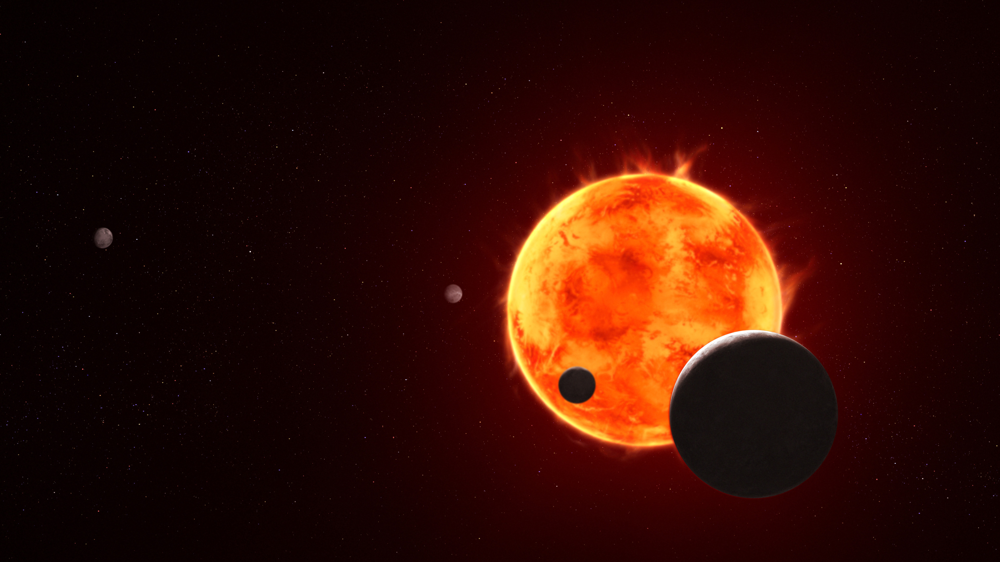
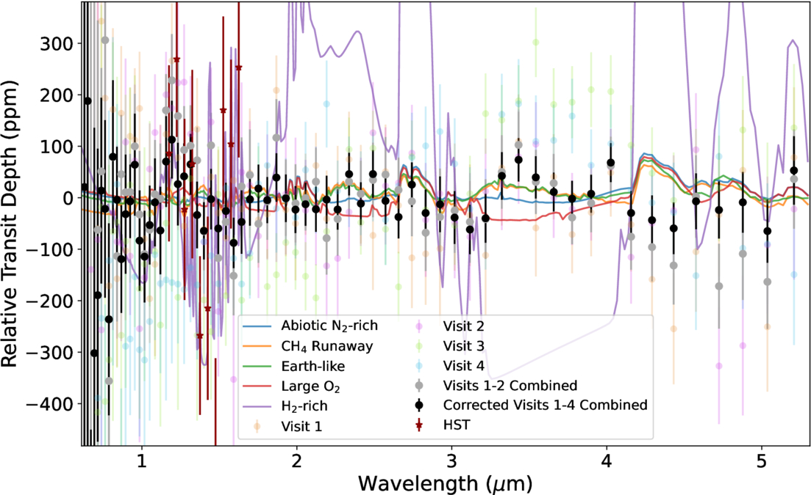
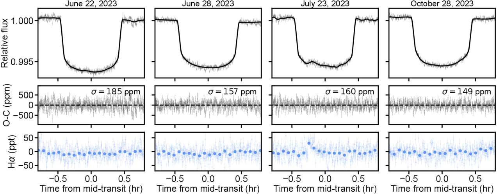
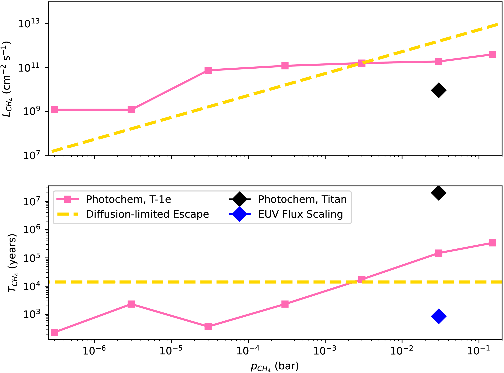
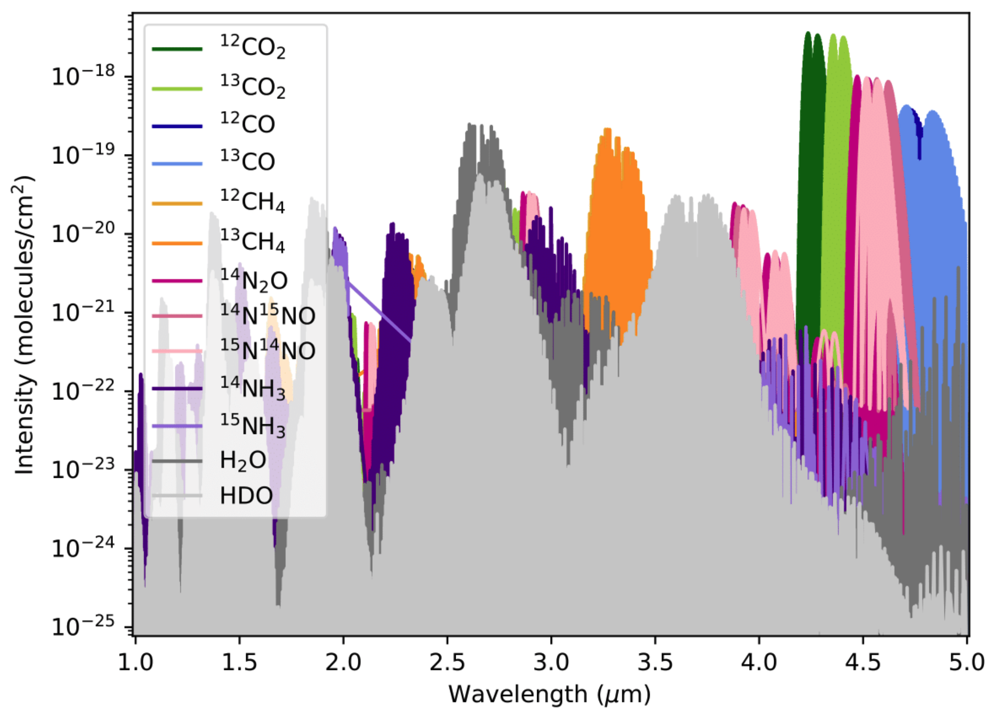
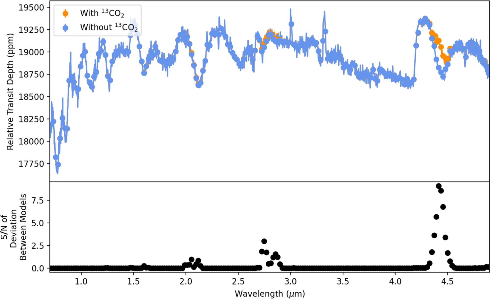
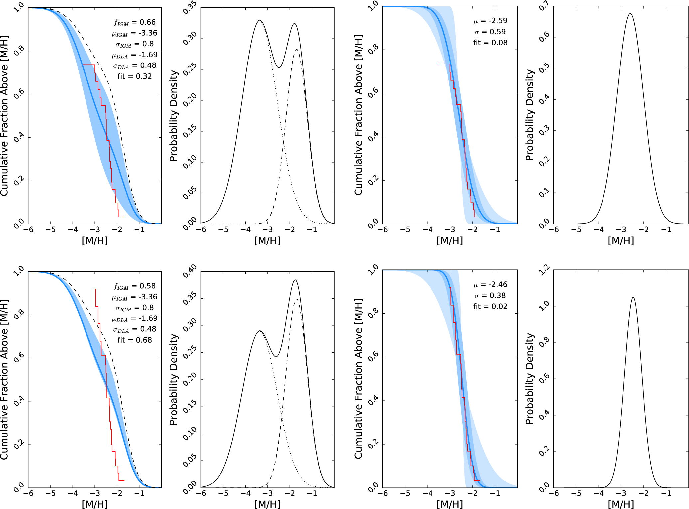
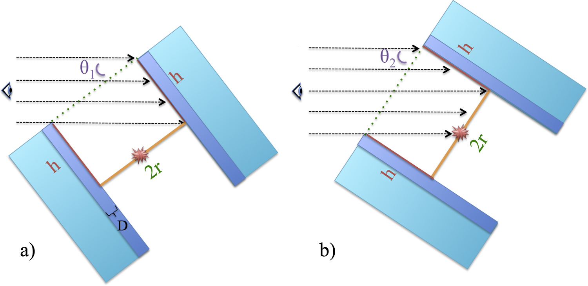
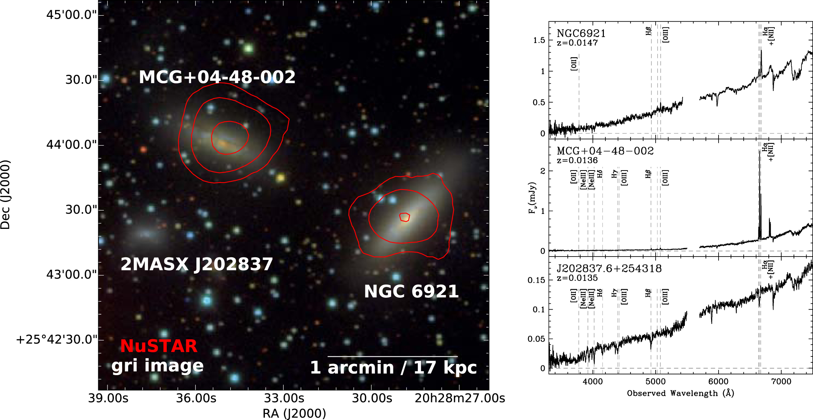
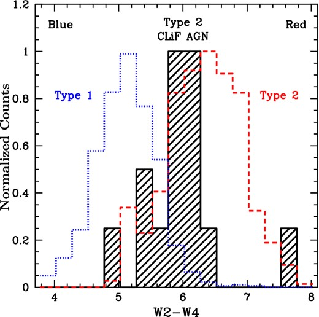

Research
Decoding the atmospheres of distant worlds
My research interests

I recently led the secondary atmosphere analysis for habitable-zone, rocky planet TRAPPIST-1 e, using JWST transmission spectroscopy. Our four-transit observations are one of the most sensitive looks at a potentially habitable terrestrial planet to date. They are an important step in the search for life outside the solar system. Our fifteen transit follow-up observations are already underway and may allow us to see an atmosphere on a temperate terrestrial world outside of the solar system for the first time.
Finding an atmosphere on such a world would be a major advancement in the search for life. Atmospheres allow liquid water to condense on a planetary surface. As the "universal solvent", water is believed to be a key requirement for the development of life. Our current constraints on TRAPPIST-1 e allow for the possibility of an atmosphere that could act as a blanket to support a global surface ocean, though we have not detected an atmosphere nor ruled one out conclusively. This is due in part to the active nature of the host star, TRAPPIST-1.
The smallest planets, those that have a surface where life could arise, are most readily observed around the smallest stars, known as M dwarfs. However, M dwarfs are highly magnetically active and cool enough that their spectra are peppered with a forest of molecular features. Stellar molecular features can also be confused for those of the planetary atmosphere as M dwarfs are cool enough to have water vapor. As we observe planets through the light of their host star, precise stellar models are critical for interpreting exoplanet atmospheric spectra. My complementary stellar research aims to improve the fidelity of M dwarf spectral models to make planetary atmospheric inferences more robust.
My research has been featured in several media outlets such as Scientific American, The New York Times, CNN, SETI Live, Sky & Telescope, Astrum Space, and AAS Nova.
I am a current member of the JWST Telescope Scientist Team, the REVEAL project, JWST TRAPPIST-1 e/b Program follow-up program, the Transiting Exoplanet Community Early Release Science Program, and the American Astronomical Society (AAS). I was previously a member of the TESS science team.
Peer-Reviewed Publications
Find my full list of publications on NASA ADS. First-author publications are hightlighted below in blue.
Atmospheric Characterization of Habitable-Zone, Rocky Planet TRAPPIST-1 e and its Host Star
We observed four transits of TRAPPIST-1 e with JWST NIRSpec/PRISM (GTO 1331, PI: N. Lewis). Our follow-up program is observing 15 transits each of TRAPPIST-1 b and e (GO 6456 and 9256, PIs: Allen & Espinoza)

JWST-TST DREAMS: Secondary Atmosphere Constraints for the Habitable Zone Planet TRAPPIST-1 e
A. Glidden, S. Ranjan, S. Seager, N. Espinoza, R.J. MacDonald, N.H. Allen, C.I. Cañas, D. Grant, A. Gressier, K.B. Stevenson, et al.
2025 ApJL 990 L53

JWST-TST DREAMS: NIRSpec/PRISM Transmission Spectroscopy of the Habitable Zone Planet TRAPPIST-1 e
N. Espinoza, N.H. Allen, A. Glidden, N.K. Lewis, S. Seager, C.I. Cañas, D. Grant, A. Gressier, S. Courreges, K.B. Stevenson, S. Ranjan, et al.
2025 ApJL 990 L52

The Photochemical Plausibility of Warm Exo-Titans Orbiting M Dwarf Stars
S. Ranjan, N.F. Wogan, A. Glidden, J. Wang, K.B. Stevenson, N. Lewis, T. Koskinen, S. Seager, H.R. Wakeford, and R.P. van der Marel
2025 ApJL 993 L39

Overestimated Pressure Broadening Misleads Model Spectra in Cool M Dwarf Stars
A. Glidden, V. Witzke, A.I. Shapiro, and S. Seager
2026 ApJL 997 L8
JWST TRAPPIST-1 e/b Program: Motivation and First Observations
N.H. Allen, N. Espinoza, V.A. Boehm, C.I. Cañas, K.B. Stevenson, N.K. Lewis, R.J. MacDonald, B.M. Morris, E. Agol, K. Colón, H. Diamond-Lowe, A. Glidden, et al.
2026 AJ 171 105
My thesis work evaluated the usefuleness of isotopologues as biosignature gases in exoplanet atmospheres.

Can Isotopologues Be Used as Biosignature Gases in Exoplanet Atmospheres?
A. Glidden, S. Seager, J.J. Petkowski, and S. Ono
2023 Life 13 2325

Can Carbon Fractionation Provide Evidence for Aerial Biospheres in the Atmospheres of Temperate Sub-Neptunes?
A. Glidden, S. Seager, J. Huang, J.J. Petkowski, and S. Ranjan
2022 ApJ 930 62
Warm, water-depleted rocky exoplanets with surface ionic liquids: A proposed class for planetary habitability
R. Agrawal, S. Seager, I. Iakubivskyi, W.P. Buchanan, A. Glidden, M.D. Seager, W. Bains, J. Huang, and J.J. Petkowski
2025 PNAS 122 e2425520122
Atmospheric carbon depletion as a tracer of water oceans and biomass on temperate terrestrial exoplanets
A.H.M.J. Triaud, J. de Wit, F. Klein, M. Turbet, B.V. Rackham, P. Niraula, A. Glidden, O.E. Jagoutz, M. Peč, J.J. Petkowski, S. Seager, and F. Selsis
2024 Nature Astronomy 8 17
My earlier research as an undergraduate focused on the active regions surrounding supermasive blackholes and the early universe.

Predominantly Low Metallicities Measured in a Stratified Sample of Lyman Limit Systems at Z=3.7
A. Glidden, T.J. Cooper, K.L. Cooksey, R.A. Simcoe, and J.M. O'Meara
2016 ApJ 833 270

A Model for Type 2 Coronal Line Forest (CLiF) AGNs
A. Glidden, M. Rose, M. Elvis, and J. McDowell
2016 ApJ 824 34

NuSTAR Resolves the First Dual AGN above 10 keV in SWIFT J2028.5+2543
M.J. Koss, A. Glidden, M. Baloković, D. Stern, I. Lamperti, R. Assef, F. Bauer, D. Ballantyne, S.E. Boggs, W.W. Craig, D. Farrah, F. Fürst, P. Gandhi, N. Gehrels, C.J. Hailey, F.A. Harrison, C. Markwardt, A. Masini, C. Ricci, E. Treister, D.J. Walton, and W.W. Zhang
2016 ApJL 824 L4

Intermediate inclinations of type 2 Coronal-Line Forest AGN
M. Rose, M. Elvis, M. Crenshaw, and A. Glidden
2015 MNRAS 451 L11
JWST GTO Cycle 1 Program 1353 (PI: N. Lewis)
The JWST Telescope Scientist Team (JWST-TST) observed WASP-17 b for 133 hours as part of our Cycle 1 Guaranteed Time Observations (GTO) program to perform Deep Reconnaissance of Exoplanet Atmospheres through Multi-instrument Spectroscopy (DREAMS).
JWST-TST DREAMS: The Nightside Emission and Chemistry of WASP-17b
J. Lustig-Yaeger, K.S. Sotzen, K.B. Stevenson, S.-M. Tsai, R.C. Challener, J. Goyal, N.K. Lewis, D.R. Louie, L.C. Mayorga, D. Valentine, H.R. Wakeford, L. Alderson, N.H. Allen, T.J. Fauchez, A. Glidden, et al.
2025 ApJL 994 L4
JWST-TST DREAMS: A Precise Water Abundance for Hot Jupiter WASP-17b from the NIRISS SOSS Transmission Spectrum
D.R. Louie, E. Mullens, L. Alderson, A. Glidden, N.K. Lewis, H.R. Wakeford, N.E. Batalha, K.D. Colón, A. Gressier, D. Long, M. Radica, N. Espinoza, et al.
2025 AJ 169 86
JWST-TST DREAMS: A Supersolar Metallicity in WASP-17 b's Dayside Atmosphere from NIRISS SOSS Eclipse Spectroscopy
A. Gressier, R.J. MacDonald, N. Espinoza, H.R. Wakeford, N.K. Lewis, J. Goyal, D.R. Louie, M. Radica, N.E. Batalha, D. Long, E.M. May, E. Mullens, S. Seager, K.B. Stevenson, J.A. Valenti, L. Alderson, N.H. Allen, C.I. Cañas, R.C. Challener, K. Colón, A. Glidden, et al.
2025 AJ 169 57
JWST-TST DREAMS: Nonuniform Dayside Emission for WASP-17b from MIRI/LRS
D. Valentine, H.R. Wakeford, R.C. Challener, N.E. Batalha, N.K. Lewis, D. Grant, E. Mullens, L. Alderson, J. Goyal, R.J. MacDonald, E.M. May, S. Seager, K.B. Stevenson, J.A. Valenti, N.H. Allen, N. Espinoza, A. Glidden, et al.
2024 AJ 168 123
JWST-TST DREAMS: Quartz Clouds in the Atmosphere of WASP-17b
D. Grant, N.K. Lewis, H.R. Wakeford, N.E. Batalha, A. Glidden, J. Goyal, E. Mullens, R.J. MacDonald, E.M. May, S. Seager, K.B. Stevenson, J.A. Valenti, C. Visscher, L. Alderson, N.H. Allen, et al.
2023 ApJL 956 L32
JWST GTO Cycle 1 Program 1312 (PI: N. Lewis)
The JWST Telescope Scientist Team (JWST-TST) observed HAT-P-26 b as part of our Cycle 1 Guaranteed Time Observations (GTO) program to perform Deep Reconnaissance of Exoplanet Atmospheres through Multi-instrument Spectroscopy (DREAMS).
JWST-TST DREAMS: Sulfur Dioxide in the Atmosphere of the Neptune-mass Planet HAT-P-26b
A. Gressier, N.E. Batalha, N. Wogan, L. Alderson, D. Doud, N. Espinoza, R.J. MacDonald, H.R. Wakeford, J.A. Valenti, N.K. Lewis, S. Seager, K.B. Stevenson, N.H. Allen, C.I. Cañas, R.C. Challener, A. Glidden, et al.
2025 AJ 170 292
Reliable Transmission Spectrum Extraction with a Three-parameter Limb-darkening Law
R.E. Keers, A.I. Shapiro, N.M. Kostogryz, A. Glidden, P. Niraula, B.V. Rackham, S. Seager, S.K. Solanki, Y.C. Unruh, V. Vasilyev, and J. de Wit
2024 ApJL 977 L7
JWST-TST High Contrast: Achieving Direct Spectroscopy of Faint Substellar Companions with the NIRSpec IFU
J.-B. Ruffio, M.D. Perrin, K.K.W. Hoch, et al, including A. Glidden
2024 AJ 168 73
JWST-TST Proper Motions. I. High-precision NIRISS Calibration and Large Magellanic Cloud Kinematics
M. Libralato, A. Bellini, R.P. van der Marel, J. Anderson, S.T. Sohn, L.L. Watkins, L. Alderson, N. Allen, M. Clampin, A. Glidden, et al.
2023 ApJ 950 101
Validation of 13 Hot and Potentially Terrestrial TESS Planets
S. Giacalone, C.D. Dressing, C. Hedges, V.B. Kostov, K.A. Collins, E.L.N. Jensen, D.A. Yahalomi, A. Bieryla, D.R. Ciardi, S.B. Howell, J. Lillo-Box, K. Barkaoui, J.G. Winters, E. Matthews, J.H. Livingston, S.N. Quinn, ..., A. Glidden, et al.
2022 AJ 163 99
The TESS Objects of Interest Catalog from the TESS Prime Mission
N.M. Guerrero, S. Seager, C.X. Huang, A. Vanderburg, A. Garcia Soto, I. Mireles, K. Hesse, W. Fong, A. Glidden, A. Shporer, et al.
2021 ApJS 254 39
TESS Hunt for Young and Maturing Exoplanets (THYME). V. A Sub-Neptune Transiting a Young Star in a Newly Discovered 250 Myr Association
B.M. Tofflemire, A.C. Rizzuto, E.R. Newton, A.L. Kraus, A.W. Mann, A. Vanderburg, T. Nelson, K. Hawkins, M.L. Wood, G. Zhou, S.N. Quinn, S.B. Howell, K.A. Collins, ..., A. Glidden, et al.
2021 AJ 161 171
HD 219134 Revisited: Planet d Transit Upper Limit and Planet f Transit Nondetection with ASTERIA and TESS
S. Seager, M. Knapp, B.-O. Demory, et. al, including A. Glidden
2021 AJ 161 117
A planetary system with two transiting mini-Neptunes near the radius valley transition around the bright M dwarf TOI-776
R. Luque, L.M. Serrano, K. Molaverdikhani, et. al, including A. Glidden
2021 A&A 645 A41
Discovery of a hot, transiting, Earth-sized planet and a second temperate, non-transiting planet around the M4 dwarf GJ 3473 (TOI-488)
J. Kemmer, S. Stock, D. Kossakowski, et al., including A. Glidden
2020 A&A 642 A236
TESS Hunt for Young and Maturing Exoplanets (THYME). III. A Two-planet System in the 400 Myr Ursa Major Group
A.W. Mann, M.C. Johnson, A. Vanderburg, et al., including A. Glidden
2020 AJ 160 179
Systematic Phase Curve Study of Known Transiting Systems from Year One of the TESS Mission
I. Wong, A. Shporer, T. Daylan, et al., including A. Glidden
2020 AJ 160 155
KELT-25 b and KELT-26 b: A Hot Jupiter and a Substellar Companion Transiting Young A Stars Observed by TESS
R. Rodríguez Martínez, B.S. Gaudi, J.E. Rodriguez, et al., including A. Glidden
2020 AJ 160 111
A giant planet candidate transiting a white dwarf
A. Vanderburg, S.A. Rappaport, S. Xu, et al., including A. Glidden
2020 Nature 585 363
TIC 278956474: Two Close Binaries in One Young Quadruple System Identified by TESS
P. Rowden, T. Borkovits, J.M. Jenkins, et al., including A. Glidden
2020 AJ 160 76
TESS Reveals HD 118203 b to be a Transiting Planet
J. Pepper, S.R. Kane, J.E. Rodriguez, et al, including A. Glidden
2020 AJ 159 243
A hot terrestrial planet orbiting the bright M dwarf L 168-9 unveiled by TESS
N. Astudillo-Defru, R. Cloutier, S.X. Wang, et al., including A. Glidden
2020 A&A 636 A58
TOI-132 b: A short-period planet in the Neptune desert transiting a V = 11.3 G-type star
M.R. Díaz, J.S. Jenkins, D. Gandolfi, et al., including A. Glidden
2020 MNRAS 493 973
Stellar Flares from the First TESS Data Release: Exploring a New Sample of M Dwarfs
M.N. Günther, Z. Zhan, S. Seager, et al., including A. Glidden
2020 AJ 159 60
Near-resonance in a System of Sub-Neptunes from TESS
S.N. Quinn, J.C. Becker, J.E. Rodriguez, et al., including A.Glidden
2019 AJ 158 177
Identifying Exoplanets with Deep Learning. III. Automated Triage and Vetting of TESS Candidates
L. Yu, A. Vanderburg, C. Huang, et al., including A. Glidden
2019 AJ 158 25
Hot, rocky and warm, puffy super-Earths orbiting TOI-402 (HD 15337)
X. Dumusque, O. Turner, C. Dorn, et al., including A. Glidden
2019 A&A 627 A43
WASP-4b Arrived Early for the TESS Mission
L.G. Bouma, J.N. Winn, C. Baxter, et al., including A. Glidden
2019 AJ 157 217
TESS Full Orbital Phase Curve of the WASP-18b System
A. Shporer, I. Wong, C.X. Huang, et al., including A. Glidden
2019 AJ 157 178
An Eccentric Massive Jupiter Orbiting a Subgiant on a 9.5-day Period Discovered in the TESS Full Frame Images
J.E. Rodriguez, S.N. Quinn, C.X. Huang, et al., including A. Glidden
2019 AJ 157 191
TESS Discovery of an Ultra-short-period Planet around the Nearby M Dwarf LHS 3844
R. Vanderspek, C.X. Huang, A. Vanderburg, et al., including A. Glidden
2019 ApJL 871 L24
TESS Discovery of a Transiting Super-Earth in the pi Mensae System
C.X. Huang, J. Burt, A. Vanderburg, et al., including A. Glidden
2018 ApJL 868 L39